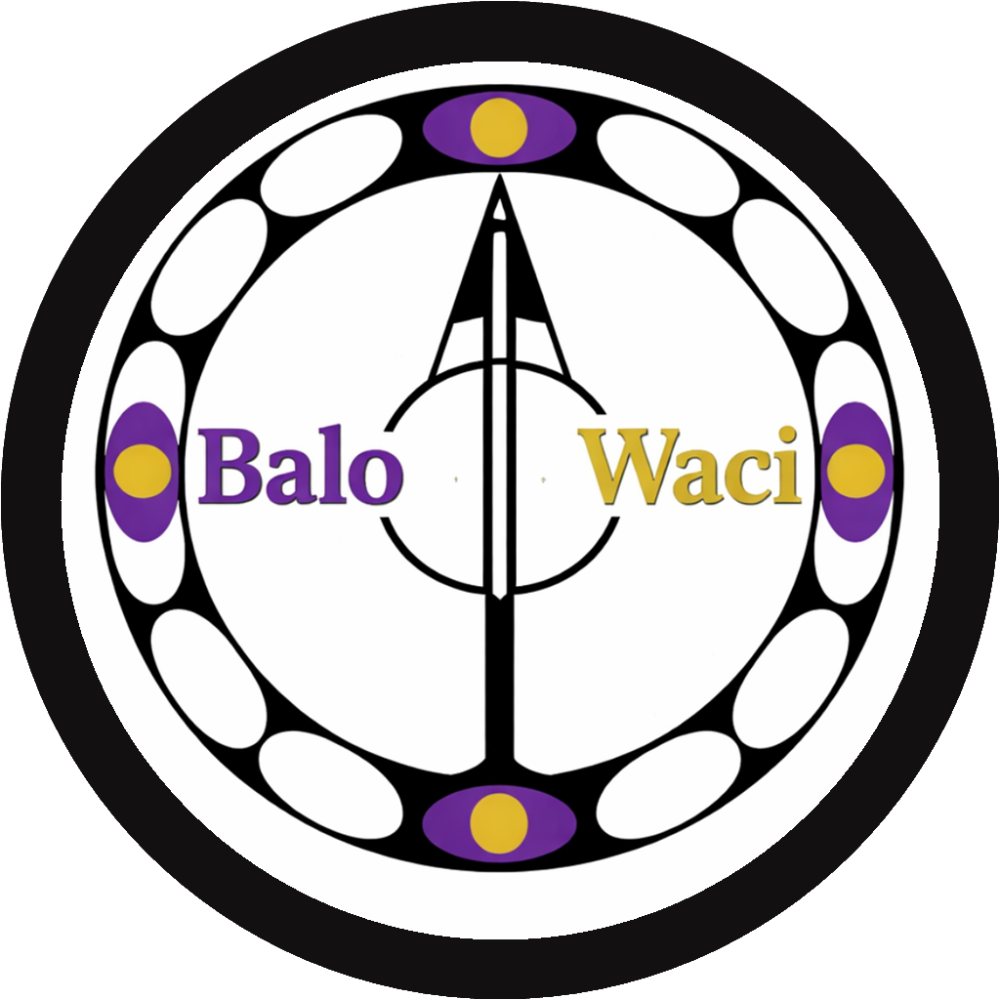

BaloWaci Trinity
Code YAH. Trinity is the easy starting point: it shows regular clock time, 24-hour time, and cultural time together so a user can understand the same moment three ways.

BaloWaciWorldSync live watch
BaloWaci helps people read one moment in more than one way: local time, world time, cultural rhythm, and weather-aware context in one live watch interface.
Today on BaloWaci
Time is opening a quiet window. Pause, choose your direction, and move with intention.
World Rhythm Mode
BaloWaci Concept Timepiece
A symbolic luxury timepiece designed to unite standard time, military time, cultural time, and rotational interpretation into one visual system.
Prototype Watch Codes
Each BaloWaci prototype explores one clear idea: Trinity combines three ways to read time, Axis explains direction and balance, and WorldSync connects cities across the world.
Code YAH. Trinity is the easy starting point: it shows regular clock time, 24-hour time, and cultural time together so a user can understand the same moment three ways.

Code WEH. Axis focuses on direction. It helps explain where a moment sits on the watch, like a compass for time, movement, and personal focus.

Code YEH. WorldSync is the global model. It lets users choose a city, see that city time live, and understand how people in different places share the same moment.
June 2026 Product Update
BaloWaci is now being shaped as a family of physical and digital time experiences: a patent-ready system, a live interface, and a collector watch language that keeps cultural, standard, military, and world rhythm readings connected.
The watch codes, live wheel, and product diagrams are being unified into one clear invention story for investors, testers, and early supporters.
BaloWaci reimagines time through multiple interpretations ��� standard, military, cultural, and rotational ��� within one unified system. We believe time should be flexible, expressive, and meaningful across different contexts and perspectives.
One moment. Multiple representations. BaloWaci combines mathematical transformation and circular design to express time differently. Each mode reveals a unique perspective on the passage of moments, from the familiar to the innovative.
This is the personal path behind BaloWaci: a founder's movement across countries, cultures, and questions about identity, time, and possibility. The idea grew from lived experience before it became a product system.
BaloWaci is becoming a symbolic time artifact: simplified on the surface, layered beneath the glass, and shaped around harmony between moving systems.
One symbol. Many systems. The exterior becomes quieter while the meaning underneath grows deeper.
A recognizable BaloWaci sigil anchors the watch face, giving the system one mark to remember.
The interface reveals less at once, letting the owner discover meaning through motion, ritual, and time.
Minute changes, alignment pulses, and slow rotation turn timekeeping into a ceremonial experience.
The product keeps the global logic underneath, but presents a calmer, more collectible exterior.
A ceremonial dove circles the watch with each minute change, turning time into a quiet symbol of peace, motion, and renewal.
BaloWaci turns navigation into a time experience. The watch is not decoration; it is the main control, the clock, and the product story in one interface.
Traditional interfaces separate navigation from meaning, forcing users to learn structure before understanding context. I designed BaloWaci to unify navigation, time interpretation, and storytelling into a single interactive system.
Initial feedback from users showed confusion around interpreting multiple time systems at once. This led me to simplify visual hierarchy and guide interaction through motion.
Each watch title became a destination, region, and live time zone. Rotating the bezel creates a clear cause-and-effect pattern: choose a marker, see the local time, then enter the section.
Users were able to navigate and understand the system without reading instructions first, validating the watch as both interface and storytelling mechanism.
I design systems where interaction carries meaning. Instead of separating function and story, I aim to merge them into a single intuitive experience.
Experience BaloWaci in motion.
Explore the circular logic behind the BaloWaci system: time as rings, motion, geometry, and cultural interpretation.
Open Live WheelView the timepiece direction as a product demo, with a watch-style interface designed to make the system feel tangible.
Open Live WatchRevenue Strategy
The free experience spreads curiosity. Paid access monetizes depth, ownership, exclusivity, and collector identity.
Next payment step: connect Stripe, PayPal, or Gumroad so locked premium cards can become real checkout paths.
These sketches document the invention path: early circles, layered time modes, ring systems, color studies, geometry, and the evolution toward a watch and interface model.


Help us understand your perspective on BaloWaci. Your insights will shape the future of this unified time system.
Follow the evolution of the timepiece, share feedback, and help shape the next model.